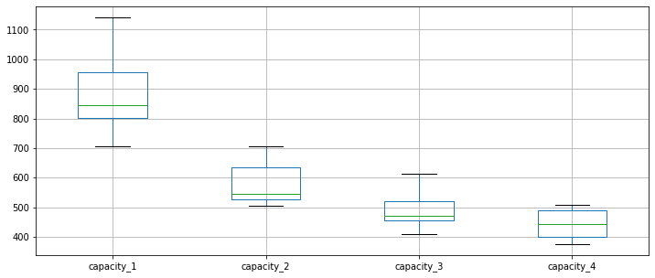

import numpy as np
import pandas as pd
import matplotlib.pyplot as pltPatient Transport Modelling
This notebook provides an overview and instructions to run the patient transport model and explore results.
Aims of the modelling
The model can be used to explore the impact of increasing transport vehicle (e.g. an ambulance) capacity on the total one-way travel time needed. We estimate two-way travel time via a simplification: doubling the one-way travel time.
Please note that:
- The modelling is not intended to provide guidance on the number of vehicles needed.
- Travel time excludes vehicle turnaround time after each trip, duration of pickup and breaks rests for drivers.
The VRP package
The python VRP package provides functions and classes to:
- Generate a simple weighted sample of a patient population spread over a geographic area.
- Construct multiple short (but not necessarily optimal) routes for transport vehicles, with a given capacity, to travel to each patient from a ‘treatment facility’ and return.
- Quickly generate a large dataset of samples through parallel simulation.
Geospatial and travel time data
The first step in parameterising a model is to load the input data files
- Patient count by postcode sector
- Travel times between each postcode sector
The data used in the analysis can be done access via functions in the module
vrp.ioNote the example here uses travel time. But travel distance could also be used.
from vrp.io import (load_patient_postcode_count,
load_travel_time)cost_matrix = load_travel_time()
sector_counts = load_patient_postcode_count()These functions each return a pandas.DataFrame
type(cost_matrix)pandas.core.frame.DataFramecost_matrix.shape(262, 262)type(sector_counts)pandas.core.frame.DataFramesector_counts.head(3)| count | |
|---|---|
| sector | |
| L151 | 1 |
| L91 | 2 |
| L31 | 1 |
Built-in preprocessing
To convert a distribution of patient counts by postcodes to proportions use the following function
from vrp.sim import create_postcode_distributionpostcode_distribution = create_postcode_distribution(sector_counts)type(postcode_distribution)pandas.core.frame.DataFramepostcode_distribution.head(3)| count | prob | |
|---|---|---|
| sector | ||
| L151 | 1 | 0.001919 |
| L91 | 2 | 0.003839 |
| L31 | 1 | 0.001919 |
Running a transport experiment and exploring results
This can be done via six classes representing an simulated experiment, a scenario and a vehicle routing solvers.
vrp.sim.TransportExperiment
vrp.sim.Scenario
vrp.sim.ILSWithConstructive
vrp.constructive.SequentialClarkeWright
vrp.sim.MultipleReplicationRunner
vrp.sim.ScenarioManagerTransportExperiment is a stochastic model. It generates a sample of the patient population to transport and then creates routes for patient transport services to use.
Scenario is a python dataclass. It is used to set the parameters for the simulation and passed to a TransportExperiment
ILSWithConstructive is a class that combines a simple constructive heuristic with Iterated Local Search
SequentialClarkeWright is a constructive heuristic based for building transport routes based on the Clarke-Wright Savings algorithm.
MultipleReplicationRunner allows a user to run multiple parallel replications of a simulation experiment.
ScenarioManager allows a user to run multiple parallel replications of multiple scenarios
Step 1: create a scenario
A Scenario accepts the following arguments
- n_patients: int, the number of patients to sample.
- warehouse: str or int, the location of the depot/warehouse/facility where the vehicles start and end their trips.
- vehicle_capacities: list, e.g [2, 3, 4].
- cost_matrix: pandas.DataFrame, A travel distance or travel time matrix between all locations.
- postcode_distribution: pandas.DataFrame, the distribution of patients by postcode.
- p_positive: float, the probability a sampled patient is positive
- p_transport: float, the probability a sampled patient required transport
#import the Scenario data class
from vrp.sim import ScenarioHOSP_LOCATION = 'L51'
N_PATIENTS = 15
CAPACITIES = [2, 3, 4]
P_POS = 1.0
P_TRAN = 1.0
#sim parameters
scenario_15 = Scenario(n_patients=N_PATIENTS,
warehouse=HOSP_LOCATION,
vehicle_capacities=CAPACITIES,
cost_matrix = cost_matrix,
postcode_distribution=postcode_distribution,
p_positive=P_POS,
p_transport=P_TRAN)Step 2: create a Vehicle Routing Solver
#import the Clark-Wright Savings euristic and ILS/Constructive wrapper classes
from vrp.constructive import SequentialClarkeWright
from vrp.sim import ILSWithConstructiveN_ITER = 20
solver = ILSWithConstructive(constructive=SequentialClarkeWright(HOSP_LOCATION),
warehouse=HOSP_LOCATION,
iterations=N_ITER)Step 3: Create a transport experiment
#import the TransportExperiment class
from vrp.sim import TransportExperimentmodel = TransportExperiment(scenario=scenario_15,
solver=solver)Step 3: Test run a single experiment
This should execute in < 1 second.
#set random seed to get a reproducible run
SEED = 19
np.random.seed(SEED)
result = model.single_replication()#the result is a python dict with total travel time by capacity of vehicle
result{'capacity_1': 962,
'capacity_2': 630.0,
'capacity_3': 494.0,
'capacity_4': 463.0}Step 4: Execute multiple independent replications in parallel
It will take several seconds to run 10 replications. Depending on the population size, number of ILS iterations, and number of replications runtime can vary from seconds to hours.
from vrp.sim import MultipleReplicationRunnerrunner = MultipleReplicationRunner(model=model, random_state=SEED)N_REPS = 10
results = runner.execute(n_reps=N_REPS)#results is a list of dicts
type(results)listresults[0]{'capacity_1': 974.0,
'capacity_2': 643.0,
'capacity_3': 528.0,
'capacity_4': 505.0}#convert results to a pandas DataFrame
df_results = pd.DataFrame(results)df_results.head(3)| capacity_1 | capacity_2 | capacity_3 | capacity_4 | |
|---|---|---|---|---|
| 0 | 974.0 | 643.0 | 528.0 | 505.0 |
| 1 | 1140.0 | 707.0 | 613.0 | 492.0 |
| 2 | 712.0 | 505.0 | 411.0 | 393.0 |
#y-acis is in minutes in this example, but could be travel distance
df_results.boxplot(figsize=(12,5))
Step 5: Analyse multiple scenarios
First create multiple scenario objects
HOSP_LOCATION = 'L51'
CAPACITIES = [2, 3, 4]
P_POS = 1.0
P_TRAN = 1.0
#scenario where 15 patients are positive on a day
scenario_15 = Scenario(n_patients=15,
warehouse=HOSP_LOCATION,
vehicle_capacities=CAPACITIES,
cost_matrix = cost_matrix,
postcode_distribution=postcode_distribution,
p_positive=P_POS,
p_transport=P_TRAN)
#scenario where 25 patients are positive on a day
scenario_25 = Scenario(n_patients=25,
warehouse=HOSP_LOCATION,
vehicle_capacities=CAPACITIES,
cost_matrix = cost_matrix,
postcode_distribution=postcode_distribution,
p_positive=P_POS,
p_transport=P_TRAN)
#store these in a dict
scenarios = {}
scenarios['15_covid_positive'] = scenario_15
scenarios['25_covid_positive'] = scenario_25#create a sce
from vrp.sim import ScenarioManagerSEED = 999
manager = ScenarioManager(scenarios, solver, random_state=SEED)scenario_results = manager.execute(N_REPS)Running scenario: 15_covid_positive... done.
Running scenario: 25_covid_positive... done.
All experiments completed.#plot multiple scenarios in one figure
fig, ax = plt.subplots(1, 2, figsize=(12,5), sharey=True)
index = 0
for scenario_name, result in scenario_results.items():
result.boxplot(ax=ax[index])
ax[index].set_title(scenario_name)
index += 1
ax[0].set_ylabel('Travel Time (mins)');
#uncomment to save to file...
#fig.savefig('scenario_boxplots.png', dpi=300)#access one of the scenarios
scenario_results['25_covid_positive']
#uncomment to save results to file
#scenario_results['25_covid_positive'].to_csv('single_scenario_result.csv')| capacity_1 | capacity_2 | capacity_3 | capacity_4 | |
|---|---|---|---|---|
| 0 | 1306.0 | 834.0 | 681.0 | 586.0 |
| 1 | 1562.0 | 976.0 | 771.0 | 706.0 |
| 2 | 1618.0 | 1059.0 | 868.0 | 750.0 |
| 3 | 1896.0 | 1175.0 | 883.0 | 799.0 |
| 4 | 1756.0 | 1027.0 | 827.0 | 724.0 |
| 5 | 1250.0 | 798.0 | 618.0 | 571.0 |
| 6 | 1732.0 | 1095.0 | 921.0 | 854.0 |
| 7 | 1972.0 | 1201.0 | 966.0 | 870.0 |
| 8 | 1514.0 | 942.0 | 720.0 | 661.0 |
| 9 | 1150.0 | 784.0 | 681.0 | 619.0 |
### Doubling travel times
two_way = scenario_results['25_covid_positive'] * 2
two_way.boxplot(figsize=(12,5))